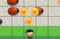

-
 Portfolio Template
Portfolio Template
Leveraging some code provided by Udacity, I coded a solution that uses content declared in JavaScript to populate an html template.
-

LadyBug Lane: A Frogger Clone
Leveraging some code and HTML5 provided by Udacity, I built a frogger clone using ladybugs instead. I even added a way to gain points by collecting gems.
-
Cam's Pizzeria
I optimized the animation on this website. Please, disregard the appearance. I was not allowed to fix the styling of the page.